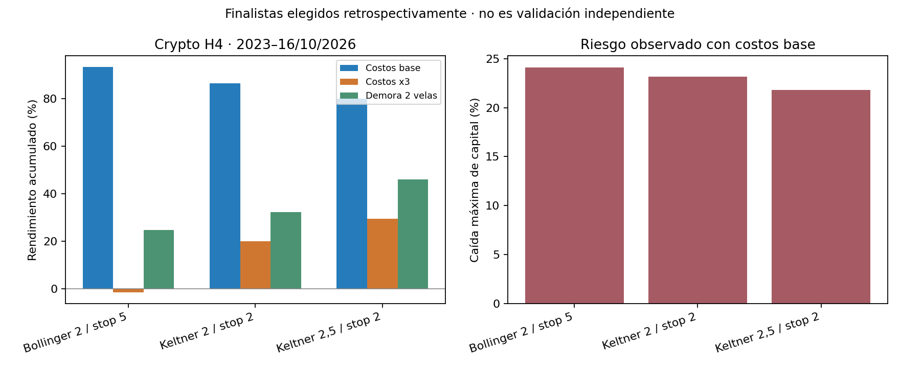

18/10/2026 UTC · datos hasta el 16/10/2026
1.227 configuraciones, comparadas con costos y riesgo
Ampliamos la búsqueda a 16 familias: RSI, Bollinger, MACD, Keltner, rupturas, momentum, tendencias, Squeeze y variantes de estructuras. Probamos 409 especificaciones en crypto diario, crypto de cuatro horas y CEDEAR diario.
Elegir con el pasado y medir en la ventana siguiente
En cada ventana se eligió el modelo de mayor rentabilidad anualizada en entrenamiento, con caída máxima histórica del 25% y al menos 20 operaciones cerradas. Ese filtro no garantiza limitar las pérdidas futuras.
| Selección por ventanas | Ganancia acumulada | Anualizada | Caída máxima continua | Costos ×3 |
|---|---|---|---|---|
| Crypto diario · 2023–oct. 2026 | +18,1% | +4,5% | 61,2% | −2,4% |
| Crypto H4 · 2023–oct. 2026 | +70,4% | +15,1% | 25,4% | +2,4% |
| CEDEAR · jul. 2025–oct. 2026 | −17,0% | −13,4% | 21,9% | −32,8% |
Un candidato concreto y una mejora de robustez
En crypto H4, ampliar la banda Keltner de 2 a 2,5 ATR, manteniendo EMA200 y stop de 2 ATR, redujo operaciones de 476 a 351. Bajó la ganancia base de 86,6% a 80,2%, pero mejoró el resultado con costos triplicados de 20,0% a 29,4% y redujo la caída máxima de 23,2% a 21,8%.

Reglas de Keltner-338: comprar en la apertura siguiente a un cierre sobre EMA20 + 2,5 ATR14 y sobre EMA200; vender en la apertura posterior a un cierre bajo EMA20. Stop inicial a 2 ATR14. Sólo compras, sin apalancamiento, capital inicial repartido por igual entre seis activos. Un salto por debajo del stop se ejecuta al precio de apertura desfavorable.
Obtuvo +80,2% acumulado, equivalente a 16,8% anualizado, en 2023–16/10/2026. Con dos velas de demora: +46,1%. Sus ventanas dieron +16,4%, +48,9%, +0,04% y +3,9%: la ventaja reciente es pequeña. Fue seleccionado retrospectivamente y requiere seguimiento con reglas congeladas antes de considerarlo para señales operativas.
El mayor retorno activo diario fue RSI14 de tendencia: +108,9%, con caída máxima del 36,6%. Comprar y mantener obtuvo +145,9% en crypto con las mismas recomposiciones anuales. Mayor ganancia y menor riesgo no coinciden en una sola estrategia. En CEDEAR, la mejor activa retrospectiva ganó sólo 6,7% y perdió 10,6% con costos triplicados; comprar y mantener ganó 32,4%, sin dividendos locales verificados.
Pruebas de estrés y límites
- Comisiones y deslizamiento base, duplicados y triplicados; demoras de una y dos velas; saltos a través del stop; variaciones de parámetros y exposición del 50% y 100%.
- 1.000 remuestreos por finalista, en bloques de siete sesiones. Para Keltner-338, el percentil 5 del retorno fue −4,2% y el percentil 95 de la caída máxima fue 34,2%. Son escenarios basados en el pasado, no probabilidades futuras verificadas.
- Capital compuesto con liquidación y recomposición de pesos en cada frontera de ventana. Crypto: 0,10% de comisión y 0,05% de deslizamiento por ejecución. CEDEAR: 0,60% y 0,20%.
- CEDEAR usa precios locales oficiales, indicadores del subyacente conocidos antes de la apertura y un CCL aproximado. La caja queda en pesos. No incluye dividendos locales no verificados, custodia ni impuestos personales. Sólo hay unos dos años de historia local.
- Universo limitado a seis pares crypto y diez CEDEAR líquidos supervivientes. No incluye todas las estrategias posibles, cortos, apalancamiento ni el motor ADR de producción.
- Squeeze es una aproximación reproducible inspirada en Carter, no el TTM propietario. La variante Ichimoku usa puntos medios sin nube desplazada. No se identificaron reglas concretas de Trade Latino: no se presenta una implementación oficial.
Las 1.227 comparaciones (CSV) · Resultados por ventana · Estrés y remuestreos de finalistas · Catálogo de parámetros · Método y reproducción